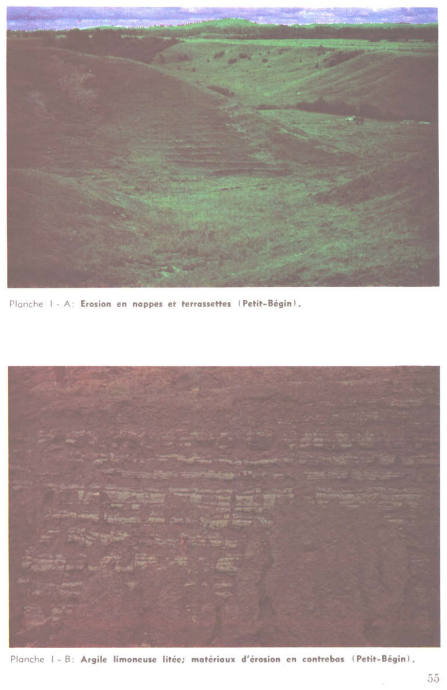
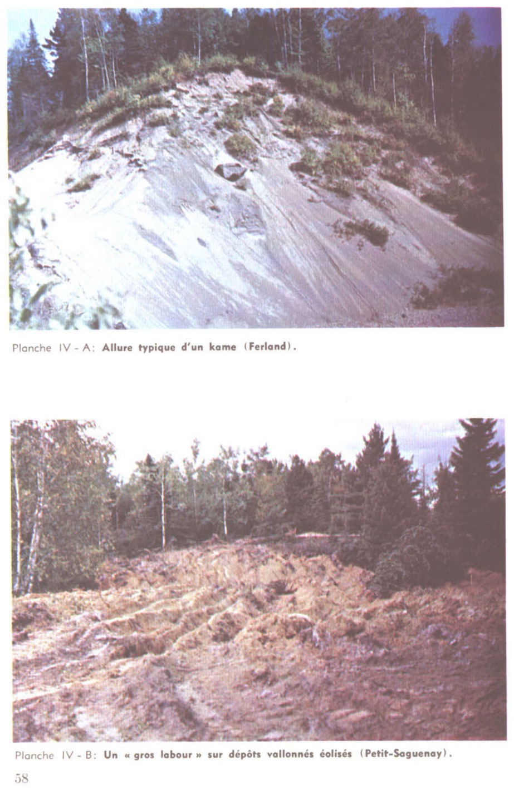
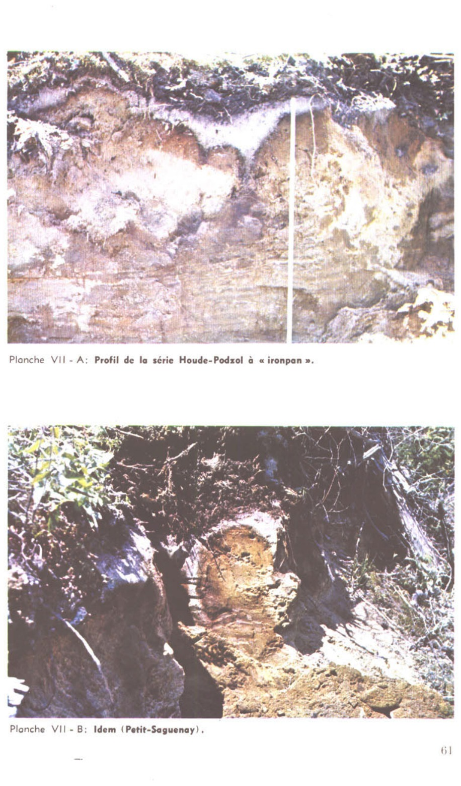
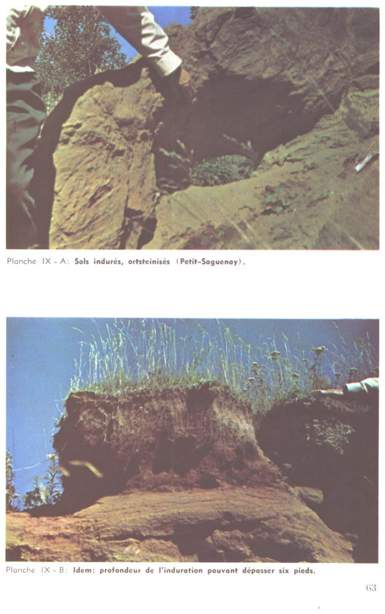

Identification & Caractéristiques Générales
Les sols de la série Petit (ou Petit Lac) se développent sur un till morainique à texture de loam ou de loam sableux d'épaisseur variable, caractérisé par une charge en fragments grossiers oscillant généralement entre 20 % et 40 %. Sur le plan géomorphologique, ce matériau parental d'origine calcaire occupe principalement des paysages caractérisés par des reliefs doux, notamment des talus à faible déclivité, des bas de pentes simples et de longues pentes régulières, prévalant notamment dans la vallée de la rivière Saint-François.
Le profil pédologique présente un drainage naturel variant de bon à imparfait, associé à un ruissellement lent et à une perméabilité globale faible à modérée. La couche de surface montre une structure polyédrique subangulaire et une réaction faiblement acide, tandis que la profondeur se distingue par un pH neutre à modérément alcalin ainsi que par la présence de carbonates libres attestée par une effervescence au contact de l'acide chlorhydrique (HCl 10 %). La capacité d'échange cationique est moyenne en surface et faible en profondeur, avec des réserves en magnésium élevées et un bon équilibre calcique, bien que les teneurs en phosphore assimilable et en potassium échangeable demeurent faibles.
Ces sols possèdent une valeur agricole intrinsèque moyenne et figurent parmi les secteurs les plus défrichés et ouverts de leur région d' occurrence. Leur mise en valeur agronomique pour les grandes cultures et les productions fourragères nécessite toutefois une attention particulière à la fertilisation phosphatée et potassique pour corriger les carences initiales, ainsi qu'un ajustement de la régie du chaulage et du travail cultural, particulièrement dans les secteurs à drainage imparfait nécessitant des aménagements hydriques souterrains.
Classification Taxonomique & Environnement Pédologique
| Ordre Pédologique | Gleysolique |
|---|---|
| Grand Groupe (SCSS) | Gleysol humique |
| Sous-Groupe Taxonomique | Gleysol humique orthique |
| Famille Pédologique | Loameuse, mixte, neutre, douce et subaquique |
| Mode de Dépôt Parental | Dépôts alluvionnaires ou glacio-marins de la vallée du Saint-Laurent |
| Classe de Drainage Naturel | Imparfait à mauvais |
| Régime Thermique & Humidité | Mésique / Perhumide à subhumide |
Description Morphologique du Profil Type
Séquences génétiques des horizons pédologiques caractérisant le profil type représentatif de la série Petit :
Profil forestier (sous boisé) — Comté de Frontenac
✓ Source : Comté de Frontenac — Page 114Couleur Munsell : Non précisée
Structure & Consistance : Polyédrique à granulaire
Description morphologique : Litière de feuilles très minces.
Couleur Munsell : 10YR 2.5/1.5, 10YR 4.5/1
Structure & Consistance : Granulaire
Description morphologique : Loam sableux très fin (mull grossier loameux mésique), noir à brun très foncé (10 YR 2.5/1.5 h), gris foncé (10 YR 4.5/1 s); structure granulaire, très grossière à grossière, forte et granulaire, fine, modérée; friable; racines abondantes, grossières à micro-racines, non orientées; très poreux; concrétions, déjections de vers, nombreux; fragments grossiers, caillouteux, constitués en dominance d'ardoises et (subordonnés quasi co-dominant) de grès ardoisiers à ciment dolomitique, de grès calcaireux ou dolomitique et de pélites micro-gréseuses, environ 20% en volume; effervescence forte au peroxyde 3-4%; limite graduelle, régulière; faiblement acide.
Couleur Munsell : 10YR 3/3, 10YR 5/1
Structure & Consistance : Granulaire
Description morphologique : Loam brun-gris foncé (10 YR 3/3 h), gris (10 YR 5/1 s); structure granulaire, grossière, forte et granulaire, fine à moyenne, forte; friable; racines abondantes, grossières à micro-racines, non orientées; très poreux; concrétions, déjections de vers, communs; fragments grossiers, graviers, de taille très fine à forte, constitués en dominance d'ardoises et (subordonnés quasi co-dominant) de grès ardoisiers à ciment dolomitique, de grès calcaireux ou dolomitique et de pélites micro-gréseuses, environ 20% en volume; effervescence forte au peroxyde 3-4%; limite nette, régulière; faiblement acide.
Couleur Munsell : 2.5Y 6/4, 10YR 5/1.5
Structure & Consistance : Granulaire
Description morphologique : Loam brun-jaune clair (2.5 Y 6/4 h), brun-gris (10 YR 5/1.5 s); structure granulaire, moyenne, faible à modérée et granulaire, fine, modérée; friable; racines abondantes, grossières à micro-racines, non orientées; peu poreux; concrétions, déjections de vers; fragments grossiers, graveleux et caillouteux, constitués en dominance d'ardoises et (subordonnés quasi co-dominant) de grès ardoisiers à ciment dolomitique, de grès calcaireux ou dolomitique et de pélites micro-gréseuses, environ 20% en volume; effervescence modérée au peroxyde 3-4%; limite abrupte, ondulée; épaisseur de 7 à 13 cm; neutre.
Couleur Munsell : 5Y 5/3 (matrice), 5Y 5/2 (marbrures)
Structure & Consistance : Polyédrique angulaire
Description morphologique : Loam olive (5 Y 5/3 h), gris olive (5 Y 5/2 s); marbrures assez nombreuses, petites, très marquées, brun-jaune (10 YR 5/8 h); structure polyédrique angulaire, moyenne, forte et polyédrique angulaire, fine, modérée; friable; très peu de racines, fines, verticales; fragments grossiers, graveleux, constitués en dominance d'ardoises et (subordonnés quasi co-dominant) de grès ardoisiers à ciment dolomitique, de grès calcaireux ou dolomitique et de pélites micro-gréseuses, environ 10% en volume; effervescence très faible au peroxyde 3-4%; neutre.
Couleur Munsell : Non précisée
Structure & Consistance : Polyédrique à granulaire
Description morphologique : Roche en place intacte ou passablement altérée, décalcifiée et hydrolysée selon des lits; faiblement calcaireuse dans les lits non altérés.
Profil cultivé (agricole) — Comté de Wolfe
✓ Source : Comté de Wolfe — Page 45Couleur Munsell : 10YR 3/2.5, 10YR 6/1.5
Structure & Consistance : Polyédrique à granulaire
Description morphologique : Loam limoneux brun gris très foncé à brun foncé (10 YR 3/2.5 h), gris clair à gris brun clair (10 YR 6/1.5 s); granulaire, fine à moyenne, modérée; très friable; racines très abondantes, très fines, fines, moyennes, verticales, obliques; fragments grossiers graveleux, à cailloux anguleux, 10% en volume; limite abrupte, ondulée; épaisseur de 15 à 21 cm; neutre.
Couleur Munsell : 10YR 4/2, 2.5Y 6/2
Structure & Consistance : Polyédrique à granulaire
Description morphologique : Loam limoneux brun gris (10 YR 4/2 h), gris brun clair (2.5 Y 6/2 s); granulaire à polyédrique subangulaire, fine à moyenne, modérée; très friable; racines abondantes, fines, très fines, obliques, verticales; fragments grossiers, graveleux, à cailloux anguleux, 10% à 20% en volume; limite nette, ondulée; épaisseur de 10 à 13 cm; faiblement alcalin.
Couleur Munsell : 10YR 4.5/2.5 (matrice), 2.5Y 6.5/2 (marbrures)
Structure & Consistance : Polyédrique à granulaire
Description morphologique : Loam gris brun à brun (10 YR 4.5/2.5 h), gris clair à gris brun clair (2.5 Y 6.5/2 s); quelques marbrures petites, moyennes, faibles; polyédrique subangulaire, moyenne, modérée à forte; très friable; racines peu abondantes, fines, très fines, microracines, obliques; fragments grossiers, graveleux, à cailloux anguleux, 10% à 20% en volume; limite graduelle, régulière; épaisseur de 21 à 26 cm; faiblement alcalin.
Couleur Munsell : 10YR 4.5/2 (matrice), 2.5Y 6/2 (marbrures)
Structure & Consistance : Polyédrique à granulaire
Description morphologique : Loam brun gris à brun gris foncé (10 YR 4.5/2 h), gris brun clair (2.5 Y 6/2 s); marbrures nombreuses, petites, moyennes, grandes, distinctes à marquées (2.5 Y 4/4 h); polyédrique subangulaire, moyenne, modérée à forte; friable; racines peu abondantes, microracines, obliques, verticales; effervescence modérée, HCl 10%; modérément alcalin.
Profils Photographiques & Planches de Terrain
Documents iconographiques, figures pédologiques et coupes de terrain documentées dans les mémoires d'inventaire pour de la série Petit :




Propriétés Physico-Chimiques & Analyses de Laboratoire
| Horizon | Prof. limite | Sable % | Limon % | Argile % | pH | C org. % | M.O. % | N tot. % | Ca éch. | Mg éch. | C.E.C. | |
|---|---|---|---|---|---|---|---|---|---|---|---|---|
| L | 0 - 1 | - | - | - | - | - | - | - | - | - | - | - |
| Ah | 1 - 21 | 2 | 2 | 3 | 64 | 70 | 17 | 13 | 6,25 | 5,90 | 7,78 | 12,17 |
| Bm1 | 21 - 33 | 12 | 11 | 13 | 0 | 36 | 46 | 18 | 6,35 | 5,98 | 8,01 | 7,64 |
| Bm2 | 33 - 46 | 17 | 7 | 9 | 12 | 44 | 41 | 15 | 6,65 | 5,98 | 7,90 | 3,54 |
| Bg | 46 - 90 | 15 | 11 | 13 | 12 | 51 | 38 | 11 | 7,25 | 6,15 | 7,82 | 0,41 |
| R | 90 + | - | - | - | - | - | - | - | - | - | - | - |
Particularités Régionales, Phases & Variantes Pédologiques
Déclinaisons régionales, faciès texturaux, phases d'érosion ou de pierrosité et variantes cartographiées par étude pour de la série Petit :
| Étude Régionale | Symbole | Appellation / Phase / Variante | Différenciation avec la série type (Analyse pédologique) |
|---|---|---|---|
| Comté de Frontenac | PET |
a) Série Petit Lac | Modalité modale de référence (type de base de la série). |
| Comté de Wolfe | PET |
a) Série Petit Lac | Conforme à la série type de référence (caractéristiques texturales et drainage identiques). |
Distribution Pédo-Paysagère (Couverture PPS)
Série historique ou locale sans polygone vectoriel individualisé autonome dans la couche Couverture_pps 2026.
Aptitudes Agronomiques, Hydropédologie & Conservation des Sols
Indicateurs Hydropédologiques & Vulnérabilité à l'Érosion (BDHP 2026)
Interprétation BDHP : Potentiel de ruissellement modérément élevé. Faible taux d'infiltration, présence d'horizons ralentissant le drainage descendant.
Classement selon l'Inventaire des Terres du Canada (ITC / CLI) : Classe 2w.
- Potentiel agricole : Terroir adapté aux cultures régionales selon la texture dominante et la régie de drainage.
- Contraintes majeures : Imparfait à mauvais. Risque d'engorgement temporaire ou d'excès d'eau printanier.
- Gestion & Aménagement : Drainage souterrain ou superficiel préconisé sur les terres planes. Chaulage et apport organique régulier selon les bilans agronomiques.
- Cultures adaptées : Grandes cultures (maïs, soya, céréales), prairies fourragères et cultures maraîchères selon le contexte géomorphologique.